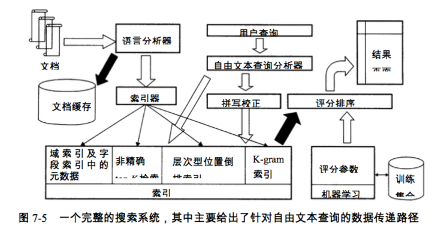
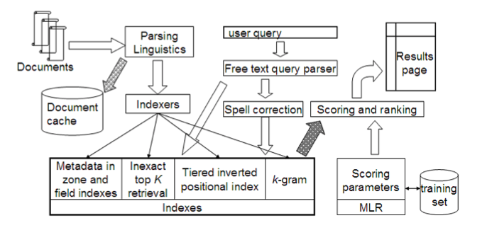
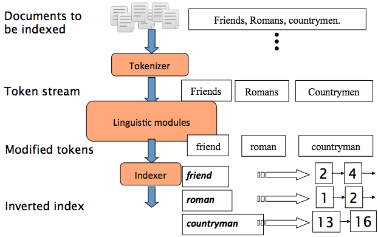
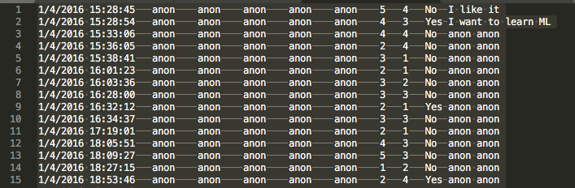
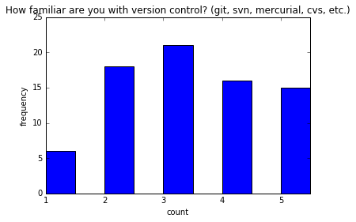
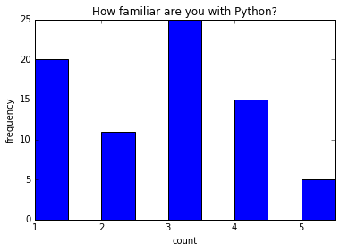
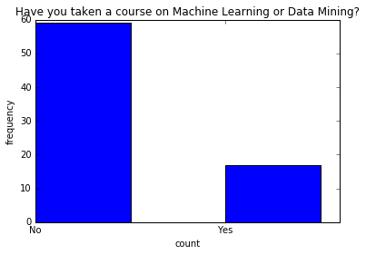

信息检索入门1
Contents
介绍
学了几个月机器学习，刚知道门儿在哪。感觉学习最难的是思维方式的转变。之前写程序就是把自己的逻辑和工程的逻辑用高级语言来描述给计算机，让它以这种固定的方式来运转。逆向工程的话，在没有源码的情况下，区分命令和数据的边界，分析加密解密流程，对核心数据进行位置定位。然而机器学习是给你数据，让你教机器去自己创造自己的逻辑，然后把机器的逻辑再加以利用。主要是训练数据提取的特征维度过高，对于逆向人员来说是不存在什么黑盒的。英语和数学是硬伤，得好好提高。 这个转换目前让我不是很适应，可能还是因为转换新领域，都说隔行如隔山，我感觉搞it的去切换一个细分领域也没那么容易，继续学吧。现在机器学习一手的资料都是英文的，更细的领域只能靠看论文学习，博客和csdn之类都是互相转载，干货不多。目前计划的研究方向是信息检索（Information Retrieval）。所以写这个系列文章，也算是我的一个学习笔记，应该会有20几篇。 我参考的教程是Illinois Institute of Technology大学的，英语好的也可以直接看这里： https://github.com/iit-cs429/main
什么是信息检索
顾名思义，举一些实例，所有的搜索引擎百度谷歌之类，还有操作系统里面的搜索文件的功能等等。 information retrieval: the process of finding relevant data。这个解释很好。
架构


实战
最简单的信息检索问题
|
|
输出： [‘cat’, ‘cat’]
大多数文档都有多个单词
|
|
输出： [[‘dog’, ‘cat’], [‘cat’, ‘zebra’]]
倒排索引（Inverted Index）
1 2 3 4 5 6 7# 将每个单词映射到包含它的文档的索引列表 index = {'dog': [0, 2], 'cat': [0, 1], # IDs are sorted. Why? 'zebra': [1], 'puma': [2]} # 之前定义的文档集: # documents = [['dog', 'cat'], ['cat', 'zebra'], ['dog', 'puma']]输出： [0, 2]
|
|
输出： [[‘dog’, ‘cat’], [‘cat’, ‘zebra’]]
构建索引
把原文的的标点去掉->分成独立的单词->全部转换成小写-> 统计每个词在第几个文档中出现过,记录对应的文档号
查询处理
大多数查询都是多个词
|
|
调查结果
统计一个txt文档并绘制柱状图
文档结构如下（tab分割，横线是tab）：

7，8，9列代表的内容如下(每列对应数字1~5代表熟悉程度)：
- ‘How familiar are you with version control? (git, svn, mercurial, cvs, etc.)’
- ‘How familiar are you with Python?’
- ‘Have you taken a course on Machine Learning or Data Mining?’
读取文件
|
|
画图
|
|
|
|

|
|

|
|

统计最后一列的句子中出现单个单词的词频
|
|
输出： [(‘anon’, 148), (‘i’, 2), (‘like’, 1), (‘ml’, 1), (‘it’, 1), (‘to’, 1), (‘want’, 1), (‘learn’, 1)]
统计2个单词所组成的单词短语的出现次数
1 2 3 4 5 6# Count 2-word phrases (bigrams) in responses to "Why are you taking this course?"# Count term_counts = Counter() for row in survey: words = row[9].lower().split() term_counts.update(zip(words[:-1], words[1:])) term_counts.most_common(20)输出： [((‘anon’, ‘anon’), 74), ((‘i’, ‘want’), 1), ((‘want’, ‘to’), 1), ((‘like’, ‘it’), 1), ((‘learn’, ‘ml’), 1), ((‘to’, ‘learn’), 1), ((‘i’, ‘like’), 1)]
Author KoU2N
LastMod 2018-08-20